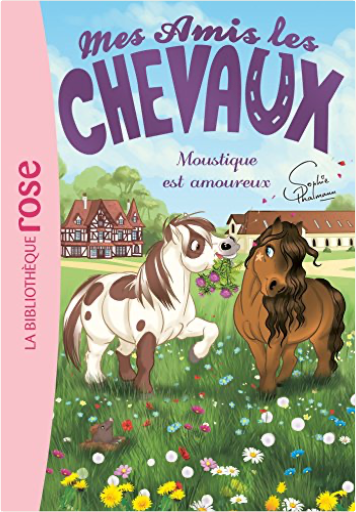

Julien
Collection Total:
1 888 Items
Last Updated:
Aug 16, 2021
Shelf:
Books
Movies
Albums
Videogames
Games
BD
BD Camille
Blu-ray
Business
Camille
Comics
Cooking
Lego
Manga
Pauline
Photography
Star Wars
Travel
TV Shows
Un livre dont vous êtes le héro
Vinyl
Walt Disney
16
17
18
19
20
mes amis les chevaux, tome 13 : moustique a mal aux dents !
sophie thalmann
2011614716
mes amis les chevaux, tome 14 - une journée à la mer
sophie thalmann
2011956722
mes amis les chevaux, tome 15 : lulu a disparu !
sophie thalmann
2011801346

mes amis les chevaux, tome 16 : moustique est amoureux
sophie thalmann
2017004332
mes amis les chevaux, tome 17 : le saut d'obstacles
sophie thalmann
2017021067
mes amis les chevaux, tome 18 : la mascotte du centre équestre
sophie thalmann
2016265779
mes amis les chevaux, tome 19 : le secret d'andalou
sophie thalmann
2017035173
mes amis les chevaux, tome 20 - tous aux pony games !
sophie thalmann
2016271302
mes amis les chevaux, tome 21 : la grande aventure d'andalou
sophie thalmann
2017039934
mes amis les chevaux, tome 24 : que le meilleur gagne !
sophie thalmann
2017071706
mes amis les chevaux, tome 25 : la tempête de neige
sophie thalmann
201707229X
mes amis les chevaux, tome 26 : un poney très coquet
sophie thalmann
2011183359
mes amis les chevaux, tome 27 : mission galop !
sophie thalmann
2017072168
mes amis les chevaux, tome 29 : plus de peur que de mal !
sophie thalmann
2017120448
16
17
18
19
20

 Made with Delicious Library
Made with Delicious Library